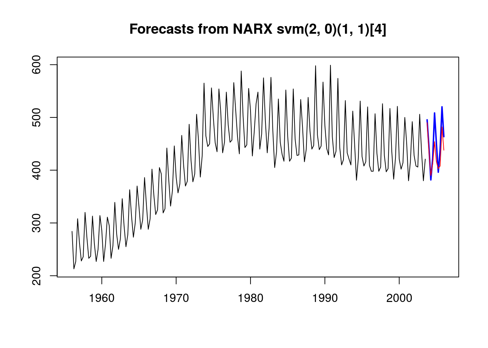
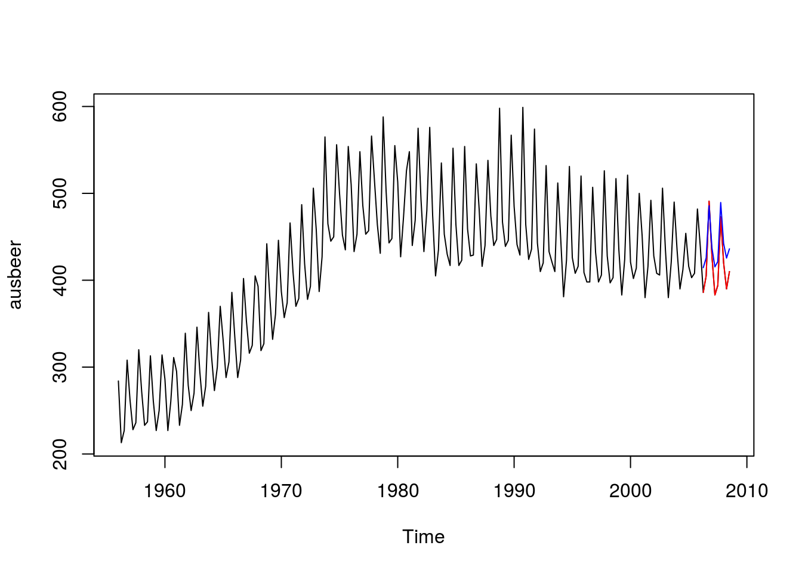
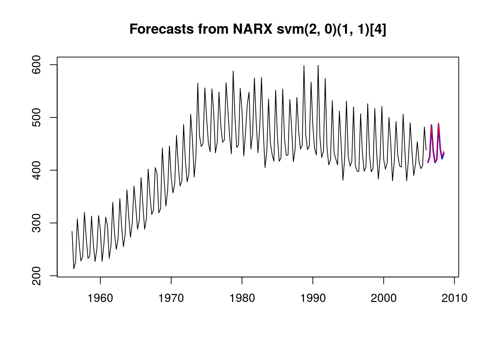

For the rest of this guide, we will use time-series ausbeer from package fpp:
library("fpp")
beer_train = head(ausbeer, -20)
beer_test = head(tail(ausbeer, 20), 10)A simple NARX model can be crafted using narx. A model with
d=0p=2freq=4D=1P=1svm learnercan be instantiated as follows:
library("mltsp")
library("e1071")
spec = build_narx(svm, p=2, d=0, P=1, D=1, freq=frequency(ausbeer))
model = narx(spec, beer_train)
model## NARX svm(2, 0)(1, 1)[4]or alternatively:
model = narx(beer_train, svm, p=2, d=0, P=1, D=1, freq=frequency(ausbeer))One could re-instantiate the model for use with another dataset using
beer_train2 = head(ausbeer, -10)
model2 = narx(model, beer_train2)Prediction uses either forecast (compatible with package forecast):
fcst = forecast(model, h = 10)
plot(fcst)
lines(beer_test, col="red")
or use predict if you want to also supply new data but use the same model:
beer_train2 = head(ausbeer, -10) # this is using data from another future!
beer_test2 = tail(ausbeer, 10) # this is using data from another future!
fcst2 = predict(model, beer_train2, h = 10)
plot(ausbeer)
lines(beer_test2, col="red")
lines(fcst2, col="blue")
Alternatively, one could reuse the model using
model2 = narx(model, beer_train2)
fcst3 = forecast(model2, h = 10)
plot(fcst3)
lines(fcst2, col="red")
Use xreg parameter as exogenous data. This example tries to forecast a random walk. Without xreg, this should be almost impossible:
set.seed(0)
tstamps = seq(as.Date("2000-01-01"), length.out = 110, by='day')
x = xts(runif(length(tstamps)), tstamps)
xreg = 1 - 0.5 * x
yreg = xts(runif(110), tstamps)
colnames(xreg) = colnames(yreg) = "xreg"
# training and testing data
x_train = head(x, 100)
x_test = tail(x, 10)
ind_test = index(x_test)For simplicity, we use SimpleLM as the learner, which is a simple wrapper for lm. * lm is not compatible with narx as it requires a formula. SimpleLM allows using a linear model without resorting to crafting formulas, similar to what svm from package e1071 does.
Model one, without xreg:
model = narx(x_train, SimpleLM, p = 2)
pred1 = forecast(model, h=10)Model two, with correlated (good) xreg:
model2 = narx(x_train, SimpleLM, p = 2, xreg = xreg)
pred2 = forecast(model2, xreg=xreg[ind_test])Model three, with an uncorrelated (bad) xreg:
model3 = narx(x_train, SimpleLM, p = 2, xreg = yreg)
pred3 = forecast(model3, xreg=yreg[ind_test])The results:
rmse <- function(x,y) sqrt(mean((x-y)^2))
c(Err_without_xreg= rmse(pred1$mean, x_test),
Err_with_xreg= rmse(pred2$mean, x_test),
Err_with_bad_xreg= rmse(pred3$mean, x_test))## Err_without_xreg Err_with_xreg Err_with_bad_xreg
## 2.755231e-01 1.570092e-16 2.985320e-01The smallest error is obtained from the model with correlated xreg.
SimpleLM, require the same column names in training and testing to fit data.h as the forecast horizon, xreg and its time-stamps are used.